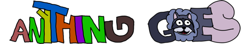
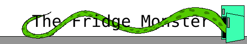

Ninus Hideon
Quem sou eu
Sou um programador de jogos e um artista com histórias (ou pelo menos pedaços de histórias) para contar. Quando não estou preso em meu vício de ler fanfics ou jogando, estou criando jogos ou trabalhando nas minhas comics. Estou trabalhando em algumas comics na plataforma ComicFury, e às vezes desenvolvo alguns jogos para publicar no itch.io.
Minhas Comics
- Minha primeira comic. Uma fanfic de Soul Food, criada por CiciEnixa.
-  Minha comic principal, criada com o objetivo de me fazer desenhar pelo menos 2 vezes na semana, ao invés de gastar todo meu tempo livre lendo fanfics. No momento estou em hiatus, então por enquanto isso não está funcionando...
-  Iniciada e publicada em paralelo em Anything Goes. Publicada em separado por conveniência dos leitores, para que eles possam ler sem interrupções de desenhos e mini-comics sem relação com a história.